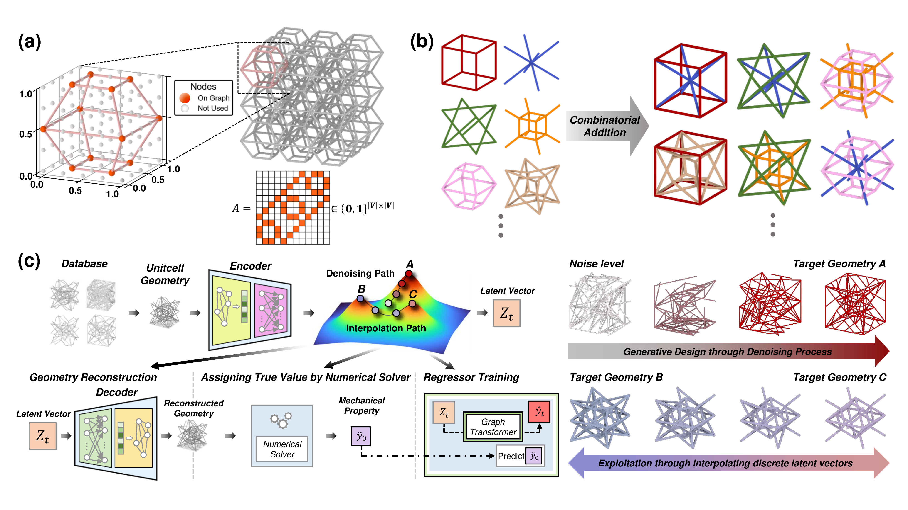

Welcome to the official website of Chanyoung Kim.
Artificial Intelligence (AI), Applied Mathematics, Quantum Computing
Email: chan00young@kaist.ac.kr
Master's degree, KAIST
B.S. in Mathematics, Early Graduation, Sungkyunkwan University
Research Support Grant for Master's Students - 2024 Next Generation Researchers Support Program in Science and Engineering funded by the National Research Foundation of Korea (NRF)
Machine Learning (ML), Generative Model (Diffusion Model, VAE)
Partial Differential Equations (PDE), Numerical Analysis, Spectral Methods
Quantum Machine Learning (QML)
Kim, N., Lee, D., Kim, C. et al. Simple arithmetic operation in latent space can generate a novel three-dimensional graph metamaterials. npj Comput Mater 10, 236 (2024). https://doi.org/10.1038/s41524-024-01430-3
(2024~) Network Manager in the Mathematical Sciences Department
(2024 Fall) TA MAS110 - Linear Algebra for Data Science
(2024 Spring) TA MAS250 - Probability and Statistics
Linux, Python (PyTorch), MATLAB
Workout, Swimming, Music, Guitar